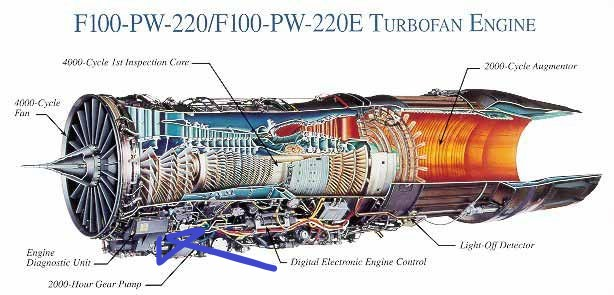

Module Project After action report
I'm not too happy with regards to time management, I spent quite a while faffing about trying to decide on a module project, as can be seen from the multiple draft proposals as well as bill of materials.
Due to that plus the time it took to finish my assignments, I started on the project extremely late.
The project is lacking that final 10% of work/effort to polish it, for instance the actuation of the turkey feathers and small touches such as better cable routing as well as design of an area/box for the microcontroller board.
For instance, removal of brim from 3D prints was substandard, although I was rushing for time, I really should have done better here


I probably could have made a small compartment built into one of the removal panels:
If time permits, I'd like to finish modelling and 3D printing the various stages of the gas turbine, for instance the compressor and its blades. That would make the project much more complete, rather than being a hollow shell. Not to mention the actuation of the turkey feathers
I'm quite happy with my CAD and modelling, though it may have been slow, the quality was ok.
I'm also quite happy with my design of the gas turbine, I was able to get around limitations such as no overnight 3D prints through printing it sectionally and assembling/joining them with screws and nuts. I don't think it's the best engineering solution but I guess it works and it's preferable to gluing which would make the turbine impossible to disassemble as well as prevent me from redoing sections in the future. For instance, if I was to redo a section such as the now empty compressor section behind the DC motor and fan, I would have to tear the glued sections apart.
I still think that the sectional concept can be improved, some of the joints were definitely overcomplicated, using too many screws and nuts as well as odd angles for assembly. I'm not too sure what's the exact engineering discipline for this. For instance, when installing the fan shroud to the compressor section, I had to screw in multiple screws through the fan blades. In hindsight, this probably wasn't the best idea but I was somehow still able to insert the screws and and attach the shroud/motor housing to the compressor section.


I think that I got off lucky on this one, the blades were thin enough for me to fit a philips screwdriver and a screw in there comfortably for me to screw it in. I think that a better approach would have to been to add the mounting holes on the sides of the shroud, screwing inwards to the centre of the shroud.
The turkey feathers are a little too triangular,
The design of the gas turbine was definitely overcomplicated, this led to quite some time being spent on the design of it.
I think that I would also slightly modify the design of my stand's legs.


As can be seen, by making the edges of my stand so sharp, some of the edges had chipped off. I should have given it a little more thickness at the bottom, instead of such a sharp corner.
I could have also incoporated a small channel for external cables such as my power cables connected to the lab power supply:

I think that in hindsight, the project was probably a bit too ambitious considering the scope and timeline. I probably could have gotten away with creating a simpler project, instead of allowing for some movement of the turkey feathers, I could have had them simply fixed in position, this would have made the design much simpler as well as open up the opportunity of printing in 1 piece.
One of the better points of my project was my project video, whilst it's no editing feat or special in anywhere, I'm happy with how it turned out despite being made with Windows 10 video editor (the successor to the famed movie maker) and the hardware I had. Considering that I didn't have fancy video editing software such as premiere on my desktop or its hardware I think that this was pretty good. I still can improve this though, the jumps are not as synced further into the
I would like to redo this project, but this time with a microcontroller with a larger storage such as the atmega328p. This would allow me more gpio pins as well as greater flexibility. The Atmega328p has more storage which would allow the usage of the IR receiver/remote which would make the project much more cleaner.